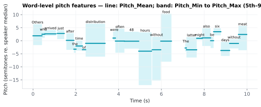
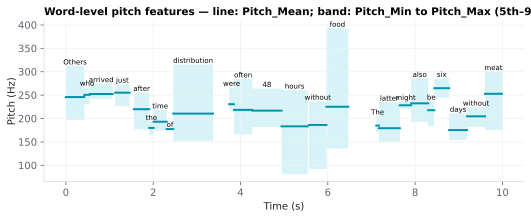

On this page
6.1.20Word-level pitch features
Five per-word summary statistics of the fundamental frequency (F0) contour, computed within each word's MFA-aligned acoustic window (Onset, End).
6.1.20.1What it is
Five per-word summary statistics of the fundamental frequency (F0)
contour, computed within each word's MFA-aligned acoustic window
(Onset, End).
| Column | Statistic | Notes |
|---|---|---|
Pitch_Mean |
Arithmetic mean of F0 frames inside the word | The primary "what pitch is this word" summary. |
Pitch_Min |
5th-percentile F0 inside the word | Robust min — avoids the spurious zero from unvoiced/octave-jump frames. |
Pitch_Max |
95th-percentile F0 inside the word | Robust max — same reason. |
Pitch_Std |
Standard deviation of F0 inside the word | Within-word pitch variability. |
Pitch_Delta |
Pitch_Mean[i] − Pitch_Mean[j], j = most recent earlier word with a Pitch_Mean |
Word-to-word pitch change; PUNCT/unaligned rows are skipped (like Word_Gap). NaN for the first aligned word. |
Words with no aligned acoustic interval (failed alignment, PUNCT) get
NaN for all five columns.
Units: semitones relative to the speaker's median pitch by
default; Hz if prosody.pitch_units: hz is set in config/features.yaml
(the GUI's pitch-units combo). Semitone units are perceptually linear and
speaker-normalized — recommended for cross-speaker analyses.
6.1.20.2See it


6.1.20.3In your output
| token | Pitch_Mean semitones | Pitch_Min semitones | Pitch_Max semitones | Pitch_Std semitones | Pitch_Delta semitones |
|---|---|---|---|---|---|
| Others | 1.914 | -1.646 | 6.354 | 3.214 | |
| who | 2.523 | 1.124 | 3.623 | 0.8916 | 0.6087 |
| arrived | 2.653 | 1.934 | 4.12 | 0.7801 | 0.1301 |
| just | 2.802 | 0.6392 | 4.048 | 1.55 | 0.1491 |
| after | 0.1619 | -3.471 | 2.887 | 2.126 | -2.64 |
| the | -3.222 | -4.6 | -1.941 | 1.062 | -3.384 |
| time | -2.012 | -3.754 | 0.1519 | 1.352 | 1.21 |
| of | -3.426 | -3.585 | -3.317 | 0.09635 | -1.413 |
| distribution | -0.9869 | -6.074 | 6.532 | 4.179 | 2.439 |
| were | 1.043 | 0.2381 | 3.509 | 1.499 | 2.03 |
| often | -0.1133 | -4.568 | 4.645 | 3.151 | -1.157 |
| 48 | -0.1599 | -3.006 | 3.459 | 2.636 | -0.04656 |
6.1.20.4MATLAB
% Load the word-level table (one row per word)
T = readtable('word/LJ002-0321_features.csv', 'TextType', 'string');
T.Properties.VariableNames % every column in the file
head(T(:, {'token', 'Pitch_Mean', 'Pitch_Min', 'Pitch_Max', 'Pitch_Std', 'Pitch_Delta'}), 10) % this feature's columns (first rows)
% Plot
ok = ~isnan(T.Pitch_Mean);
plot([T.Onset(ok) T.End(ok)]', [T.Pitch_Mean(ok) T.Pitch_Mean(ok)]', 'LineWidth', 2)
xlabel('Time (s)'); ylabel('Pitch_Mean')
6.1.20.5Math / implementation details
- F0 is estimated by Praat (Boersma 2018) — autocorrelation-based, with configurable floor / ceiling (defaults 75 / 500 Hz, GUI-tunable).
- Aggregates are computed over non-NaN F0 frames inside [Onset, End). Unvoiced frames are NaN in Praat's output and are excluded from all five statistics.
Pitch_Min/Pitch_Maxuse the 5th and 95th percentiles rather than absolute extrema — this discards isolated octave-jump errors that would otherwise dominate the per-word min/max.- For single-frame words,
Pitch_Std = 0and min/max/mean all collapse to the same value (deliberate, not a bug).
Semitone conversion (when pitch_units == "semitones"):
pitch_st = 12 · log₂(pitch_hz / speaker_median_pitch_hz)
speaker_median_pitch_hz is computed once per audio file from all
voiced frames.
6.1.20.6Configuration
Configurable from the GUI (Word-level features → Prosody card → config row):
- Pitch units — semitones (default) or Hz.
- Pitch floor / ceiling — Praat F0 estimation range. Defaults
75 / 500 Hzwork for most adult voices; raise the floor (~120 Hz) for child speakers, lower the ceiling (~300 Hz) for bass voices.
Validation ranges:
Pitch_Meanin 60–300 Hz (or −12 to +12 semitones relative to speaker median). Outside this → suspect pitch range misconfig.
6.1.20.7In the code
Source: sensi/extractors/prosody.py:add_word_prosody. Underlying contours:
sensi/extractors/audio_features.py:Contours (Parselmouth call).
What the code does:
- Receives a precomputed
Contoursobject (pitch + intensity time series at a uniform Praat-derived time step). - Converts the pitch series to semitones relative to
speaker_median_pitch_hzif requested. - For each word row (in order), slices contour frames to
[Onset, End)and computes_agg(slice)=(mean, p5, p95, std). - Computes
Pitch_DeltaasPitch_Mean − Pitch_Mean.ffill().shift(1): the change from the most recent earlier word that has a value, so a PUNCT or unaligned row in between doesn't turn the next word's delta into NaN. - PUNCT rows / unaligned rows receive NaN for all five columns uniformly.
Why:
- Robust percentiles instead of true min/max — Praat's autocorrelation pitch tracker occasionally jumps an octave; percentile-based extrema absorb those outliers without losing the legitimate within-word range.
- Semitone default — speaker-normalized and perceptually linear (a 1-semitone change is the same perceived pitch interval whether the speaker's median is 100 Hz or 200 Hz), so cross-speaker comparisons stay meaningful.
- Single forward pass over Contours — pitch and intensity share a single Praat call upstream, then both word-level and document-level prosody reuse the same numpy arrays; computationally cheap.
6.1.20.8Library
import parselmouth
snd = parselmouth.Sound("stimulus.wav")
pitch = snd.to_pitch(time_step=0.01, pitch_floor=75, pitch_ceiling=500)
hz = pitch.selected_array["frequency"]
hz[hz == 0] = np.nan # Praat marks unvoiced as 0
times = pitch.xs()
6.1.20.9EEG rationale
Pitch is the primary acoustic carrier of prosodic prominence, intonation, and lexical tone (in tonal languages). For naturalistic-EEG analyses:
- Pitch accents on prominent words elicit a P200 whose amplitude is modulated by the onset latency of the F0 peak (Heim 2006); this is the canonical "accent positivity" in the ERP-prosody literature.
- Pitch resets at boundaries cue prosodic phrasing and modulate the closure-positive-shift (CPS, Steinhauer 1999).
Pitch_Deltacaptures pitch movement across words — a continuous proxy for the rises and falls that signal interrogatives, lists, and emphasis.- Speaker-normalized semitone units make individual-speaker effects comparable and avoid Hz-scale outliers from low-pitched vs high-pitched voices.
Pitch features are also standard nuisance regressors in surprisal-locked EEG analyses, because prominent words tend to be both higher-pitched and more informative — confounded if pitch isn't controlled (Wagner 2010; see also Heilbron 2022, who model EEG/MEG responses to GPT-2 surprisal alongside acoustic regressors during naturalistic listening).
6.1.20.10Papers
Praat / pitch estimation:
- Boersma 2018 Boersma & Weenink. Praat: doing phonetics by computer. praat.org — Praat reference; autocorrelation pitch detection (
To Pitch (ac)).
Pitch and EEG:
- Steinhauer 1999 Steinhauer, Alter, Friederici. Brain potentials indicate immediate use of prosodic cues in natural speech processing. Nature Neuroscience 2(2), 191–196. doi:10.1038/5757 — closure-positive-shift driven by pitch resets at intonational phrase boundaries.
- Heim 2006 Heim & Alter. Prosodic pitch accents in language comprehension and production: ERP data and acoustic analyses. Acta Neurobiologiae Experimentalis 66(1), 55–68. doi:10.55782/ane-2006-1587 — sentence-initial pitch accents elicit a P200 modulated by the onset latency of the F0 peak.
- Wagner 2010 Wagner & Watson. Experimental and theoretical advances in prosody: A review. Language and Cognitive Processes 25(7), 905–945. doi:10.1080/01690961003589492 — review covering how prosodic prominence is shaped by predictability and information structure.
- Heilbron 2022 Heilbron, Armeni, Schoffelen, Hagoort, De Lange. A hierarchy of linguistic predictions during natural language comprehension. PNAS 119(32), e2201968119. doi:10.1073/pnas.2201968119 — naturalistic-listening EEG/MEG analysis combining GPT-2 surprisal with acoustic regressors.